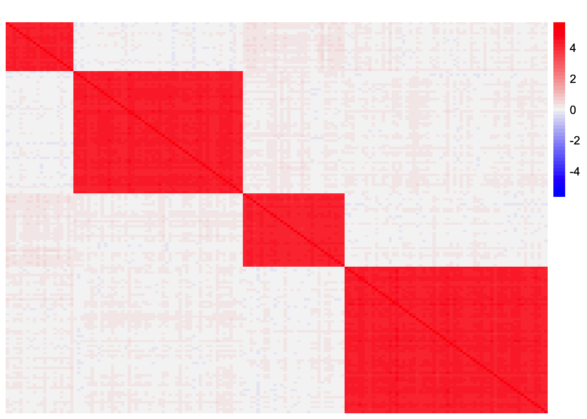
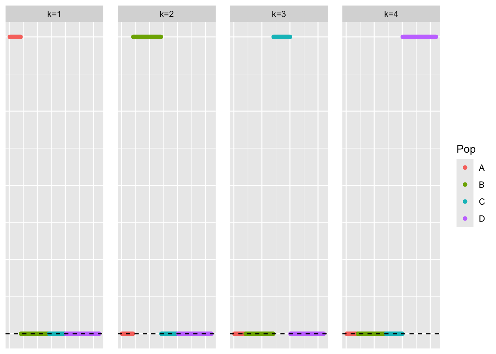
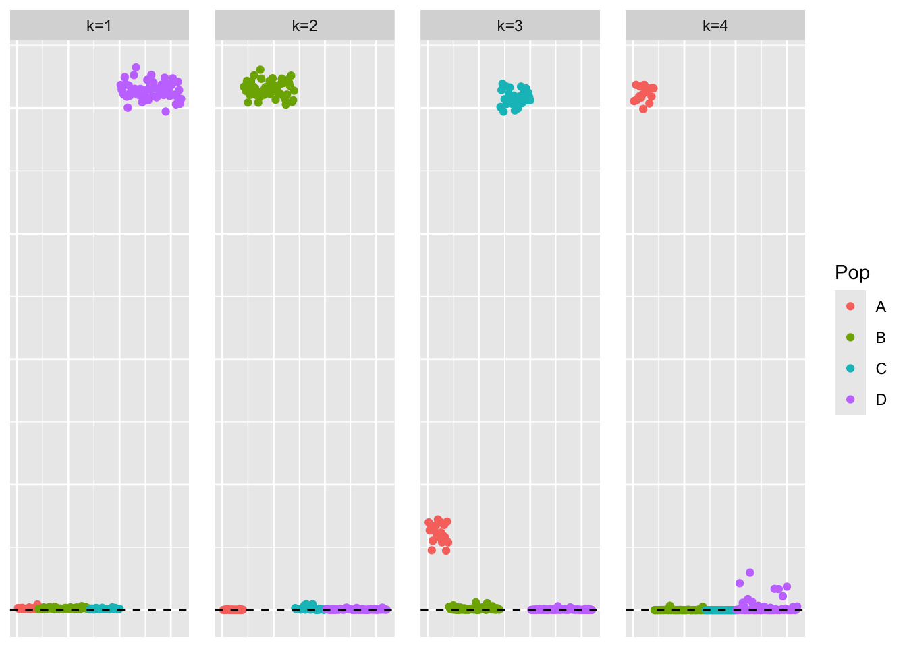
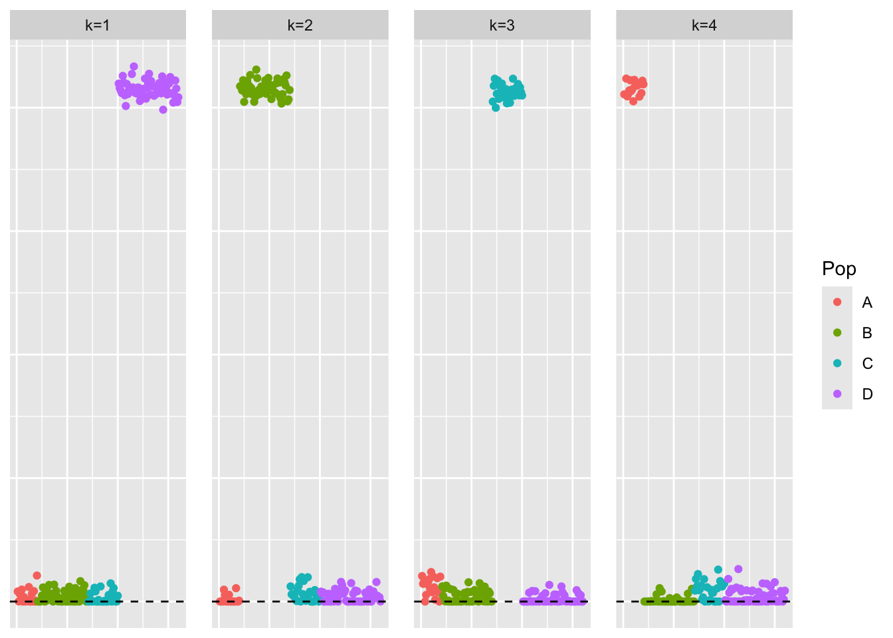

Last updated: 2026-03-04
Checks: 7 0
Knit directory:
symmetric_covariance_decomposition/
This reproducible R Markdown analysis was created with workflowr (version 1.7.2). The Checks tab describes the reproducibility checks that were applied when the results were created. The Past versions tab lists the development history.
Great! Since the R Markdown file has been committed to the Git repository, you know the exact version of the code that produced these results.
Great job! The global environment was empty. Objects defined in the global environment can affect the analysis in your R Markdown file in unknown ways. For reproduciblity it’s best to always run the code in an empty environment.
The command set.seed(20250408) was run prior to running
the code in the R Markdown file. Setting a seed ensures that any results
that rely on randomness, e.g. subsampling or permutations, are
reproducible.
Great job! Recording the operating system, R version, and package versions is critical for reproducibility.
Nice! There were no cached chunks for this analysis, so you can be confident that you successfully produced the results during this run.
Great job! Using relative paths to the files within your workflowr project makes it easier to run your code on other machines.
Great! You are using Git for version control. Tracking code development and connecting the code version to the results is critical for reproducibility.
The results in this page were generated with repository version d2f2b97. See the Past versions tab to see a history of the changes made to the R Markdown and HTML files.
Note that you need to be careful to ensure that all relevant files for
the analysis have been committed to Git prior to generating the results
(you can use wflow_publish or
wflow_git_commit). workflowr only checks the R Markdown
file, but you know if there are other scripts or data files that it
depends on. Below is the status of the Git repository when the results
were generated:
Ignored files:
Ignored: .DS_Store
Ignored: .Rhistory
Ignored: analysis/.DS_Store
Ignored: analysis/figure/
Ignored: data/.DS_Store
Unstaged changes:
Modified: analysis/symebcovmf_gb_point_exp_backfit.Rmd
Modified: analysis/symebcovmf_laplace_exploration.Rmd
Modified: analysis/symebcovmf_laplace_split_init_tree.Rmd
Modified: analysis/symebcovmf_laplace_split_init_tree_exploration.Rmd
Modified: analysis/symebcovmf_overlap_backfit.Rmd
Modified: analysis/symebcovmf_point_exp_backfit_tree.Rmd
Note that any generated files, e.g. HTML, png, CSS, etc., are not included in this status report because it is ok for generated content to have uncommitted changes.
These are the previous versions of the repository in which changes were
made to the R Markdown
(analysis/unbal_nonoverlap_backfit.Rmd) and HTML
(docs/unbal_nonoverlap_backfit.html) files. If you’ve
configured a remote Git repository (see ?wflow_git_remote),
click on the hyperlinks in the table below to view the files as they
were in that past version.
| File | Version | Author | Date | Message |
|---|---|---|---|---|
| Rmd | d2f2b97 | Annie Xie | 2026-03-04 | Re-run unbal nonoverlap analysis with new backfit function |
| html | 47084d6 | Annie Xie | 2025-05-12 | Build site. |
| Rmd | 755d361 | Annie Xie | 2025-05-12 | Add analysis of backfit in unbal nonoverlap setting |
In this analysis, I explore backfitting in the unbalanced non-overlapping setting.
When applying greedy symEBcovMF with point-exponential prior to the unbalanced non-overlapping setting, the method did a relatively good job. However, the third factor it found was not a single group effect factor. For the third factor, the most prominent effect was the third group effect. But there was also a small non-zero loading on the first group effect. In my exploration, I found that the greedy method does prefer this solution (this solution yields a higher objective function). Therefore, I want to test if backfitting will change this factor to a single group effect factor. I hypothesize that it will since the first group effect is already captured in the fourth factor.
devtools::load_all('~/Documents/Github/ebnm')ℹ Loading ebnmWarning: package 'testthat' was built under R version 4.5.2library(pheatmap)
library(ggplot2)Warning: package 'ggplot2' was built under R version 4.5.2library(symebcovmf)source('code/visualization_functions.R')# adapted from Jason's code
# args is a list containing pop_sizes, branch_sds, indiv_sd, n_genes, and seed
sim_star_data <- function(args) {
set.seed(args$seed)
n <- sum(args$pop_sizes)
p <- args$n_genes
K <- length(args$pop_sizes)
FF <- matrix(rnorm(K * p, sd = rep(args$branch_sds, each = p)), ncol = K)
LL <- matrix(0, nrow = n, ncol = K)
for (k in 1:K) {
vec <- rep(0, K)
vec[k] <- 1
LL[, k] <- rep(vec, times = args$pop_sizes)
}
E <- matrix(rnorm(n * p, sd = args$indiv_sd), nrow = n)
Y <- LL %*% t(FF) + E
YYt <- (1/p)*tcrossprod(Y)
return(list(Y = Y, YYt = YYt, LL = LL, FF = FF, K = ncol(LL)))
}pop_sizes <- c(20,50,30,60)
n_genes <- 1000
branch_sds <- rep(2,4)
indiv_sd <- 1
seed <- 1
sim_args = list(pop_sizes = pop_sizes, branch_sds = branch_sds, indiv_sd = indiv_sd, n_genes = n_genes, seed = seed)
sim_data <- sim_star_data(sim_args)This is a heatmap of the scaled Gram matrix:
plot_heatmap(sim_data$YYt, colors_range = c('blue','gray96','red'), brks = seq(-max(abs(sim_data$YYt)), max(abs(sim_data$YYt)), length.out = 50))
This is a scatter plot of the true loadings matrix:
pop_vec <- rep(c('A','B','C','D'), times = pop_sizes)
plot_loadings(sim_data$LL, pop_vec)
First, we apply greedy symEBcovMF with point-exponential prior to the Gram matrix:
symebcovmf_unbal_refit_fit <- sym_ebcovmf_fit(S = sim_data$YYt, ebnm_fn = ebnm_point_exponential, K = 4, maxiter = 100, rank_one_tol = 10^(-8), tol = 10^(-8), refit_lam = TRUE)[1] "Adding factor 1"
[1] "Adding factor 2"
[1] "Adding factor 3"
[1] "Adding factor 4"This is a scatter plot of \(\hat{L}\), the estimate from symEBcovMF:
plot_loadings(symebcovmf_unbal_refit_fit$L_pm %*% diag(sqrt(symebcovmf_unbal_refit_fit$lambda)), pop_vec)
This is the objective function value attained:
symebcovmf_unbal_refit_fit$elbo[1] 1097.095Now, we try backfitting (also with a point-exponential prior):
symebcovmf_fit_backfit <- sym_ebcovmf_backfit(sim_data$YYt, symebcovmf_unbal_refit_fit, ebnm_fn = ebnm::ebnm_point_exponential, backfit_maxiter = 100)[1] "Updating factor 1"
[1] "Updating factor 2"
[1] "Updating factor 3"
[1] "Updating factor 4"
[1] "elbo decreased by 5.12166454150974"
[1] "Updating factor 1"
[1] "Updating factor 2"
[1] "Updating factor 3"
[1] "Updating factor 4"
[1] "elbo decreased by 0.159350198635366"
[1] "Updating factor 1"
[1] "Updating factor 2"
[1] "elbo decreased by 0.00798054157348815"
[1] "Updating factor 3"
[1] "Updating factor 4"
[1] "elbo decreased by 0.101693053058625"
[1] "Updating factor 1"
[1] "Updating factor 2"
[1] "elbo decreased by 0.00330330304859672"
[1] "Updating factor 3"
[1] "elbo decreased by 5.45696821063757e-11"
[1] "Updating factor 4"
[1] "elbo decreased by 0.0722115933640453"
[1] "Updating factor 1"
[1] "Updating factor 2"
[1] "elbo decreased by 0.000925249869396794"
[1] "Updating factor 3"
[1] "Updating factor 4"
[1] "elbo decreased by 0.0518794978506776"
[1] "Updating factor 1"
[1] "Updating factor 2"
[1] "elbo decreased by 3.28509486280382e-09"
[1] "Updating factor 3"
[1] "elbo decreased by 7.14862835593522e-10"
[1] "Updating factor 4"
[1] "elbo decreased by 0.0397902601271198"
[1] "Updating factor 1"
[1] "Updating factor 2"
[1] "Updating factor 3"
[1] "Updating factor 4"
[1] "elbo decreased by 0.0310863962404255"
[1] "Updating factor 1"
[1] "Updating factor 2"
[1] "Updating factor 3"
[1] "Updating factor 4"
[1] "elbo decreased by 0.024121517124513"
[1] "Updating factor 1"
[1] "Updating factor 2"
[1] "elbo decreased by 1.28602550830692e-09"
[1] "Updating factor 3"
[1] "Updating factor 4"
[1] "elbo decreased by 0.018999099440407"
[1] "Updating factor 1"
[1] "Updating factor 2"
[1] "Updating factor 3"
[1] "elbo decreased by 2.60115484707057e-10"
[1] "Updating factor 4"
[1] "elbo decreased by 0.0154308587389096"
[1] "Updating factor 1"
[1] "Updating factor 2"
[1] "Updating factor 3"
[1] "Updating factor 4"
[1] "elbo decreased by 0.0128987732296082"
[1] "Updating factor 1"
[1] "Updating factor 2"
[1] "Updating factor 3"
[1] "Updating factor 4"
[1] "elbo decreased by 0.0110000502008916"
[1] "Updating factor 1"
[1] "Updating factor 2"
[1] "elbo decreased by 3.26326698996127e-09"
[1] "Updating factor 3"
[1] "Updating factor 4"
[1] "elbo decreased by 0.00949011103330122"
[1] "Updating factor 1"
[1] "Updating factor 2"
[1] "elbo decreased by 2.47746356762946e-09"
[1] "Updating factor 3"
[1] "Updating factor 4"
[1] "elbo decreased by 0.00823278617826873"
[1] "Updating factor 1"
[1] "elbo decreased by 2.18460627365857e-09"
[1] "Updating factor 2"
[1] "elbo decreased by 3.11410985887051e-09"
[1] "Updating factor 3"
[1] "Updating factor 4"
[1] "elbo decreased by 0.00715482760097075"
[1] "Updating factor 1"
[1] "elbo decreased by 4.29281499236822e-10"
[1] "Updating factor 2"
[1] "elbo decreased by 1.39880285132676e-09"
[1] "Updating factor 3"
[1] "Updating factor 4"
[1] "elbo decreased by 0.00621643156591745"
[1] "Updating factor 1"
[1] "Updating factor 2"
[1] "elbo decreased by 3.89081833418459e-09"
[1] "Updating factor 3"
[1] "Updating factor 4"
[1] "elbo decreased by 0.00539456949081796"
[1] "Updating factor 1"
[1] "Updating factor 2"
[1] "elbo decreased by 4.49290382675827e-10"
[1] "Updating factor 3"
[1] "Updating factor 4"
[1] "elbo decreased by 0.0046741704318265"
[1] "Updating factor 1"
[1] "elbo decreased by 8.03993316367269e-10"
[1] "Updating factor 2"
[1] "elbo decreased by 3.6652636481449e-09"
[1] "Updating factor 3"
[1] "Updating factor 4"
[1] "elbo decreased by 0.00404380953477812"
[1] "Updating factor 1"
[1] "elbo decreased by 1.1423253454268e-09"
[1] "Updating factor 2"
[1] "Updating factor 3"
[1] "Updating factor 4"
[1] "elbo decreased by 0.00349372701930406"
[1] "Updating factor 1"
[1] "Updating factor 2"
[1] "Updating factor 3"
[1] "Updating factor 4"
[1] "elbo decreased by 0.00301505288553017"
[1] "Updating factor 1"
[1] "elbo decreased by 3.8198777474463e-10"
[1] "Updating factor 2"
[1] "elbo decreased by 2.77395884040743e-09"
[1] "Updating factor 3"
[1] "Updating factor 4"
[1] "elbo decreased by 0.00259956925583538"
[1] "Updating factor 1"
[1] "elbo decreased by 3.28509486280382e-09"
[1] "Updating factor 2"
[1] "Updating factor 3"
[1] "Updating factor 4"
[1] "elbo decreased by 0.00223978901522059"
[1] "Updating factor 1"
[1] "elbo decreased by 8.9130480773747e-11"
[1] "Updating factor 2"
[1] "elbo decreased by 3.01952240988612e-10"
[1] "Updating factor 3"
[1] "Updating factor 4"
[1] "elbo decreased by 0.00192867863916035"
[1] "Updating factor 1"
[1] "elbo decreased by 5.49334799870849e-10"
[1] "Updating factor 2"
[1] "elbo decreased by 1.63237200467847e-06"
[1] "Updating factor 3"
[1] "Updating factor 4"
[1] "elbo decreased by 0.00166016387811396"
[1] "Updating factor 1"
[1] "Updating factor 2"
[1] "elbo decreased by 2.92185723083094e-06"
[1] "Updating factor 3"
[1] "Updating factor 4"
[1] "elbo decreased by 0.00142854694422567"
[1] "Updating factor 1"
[1] "Updating factor 2"
[1] "elbo decreased by 3.59777186531574e-06"
[1] "Updating factor 3"
[1] "Updating factor 4"
[1] "elbo decreased by 0.0012289934893488"
[1] "Updating factor 1"
[1] "elbo decreased by 4.49654180556536e-09"
[1] "Updating factor 2"
[1] "elbo decreased by 3.85529529012274e-06"
[1] "Updating factor 3"
[1] "Updating factor 4"
[1] "elbo decreased by 0.00105710318348429"
[1] "Updating factor 1"
[1] "elbo decreased by 1.1623342288658e-09"
[1] "Updating factor 2"
[1] "elbo decreased by 3.86827923648525e-06"
[1] "Updating factor 3"
[1] "elbo decreased by 5.18411980010569e-10"
[1] "Updating factor 4"
[1] "elbo decreased by 0.000909062206119415"
[1] "Updating factor 1"
[1] "Updating factor 2"
[1] "elbo decreased by 3.70680754713248e-06"
[1] "Updating factor 3"
[1] "elbo decreased by 2.05545802600682e-10"
[1] "Updating factor 4"
[1] "elbo decreased by 0.000781745602580486"
[1] "Updating factor 1"
[1] "elbo decreased by 4.00177668780088e-10"
[1] "Updating factor 2"
[1] "elbo decreased by 3.46442357113119e-06"
[1] "Updating factor 3"
[1] "elbo decreased by 1.94631866179407e-10"
[1] "Updating factor 4"
[1] "elbo decreased by 0.00067230826789455"
[1] "Updating factor 1"
[1] "elbo decreased by 2.51202436629683e-09"
[1] "Updating factor 2"
[1] "elbo decreased by 3.18535603582859e-06"
[1] "update to factor 2 decreased the elbo by 4.47798811364919e-08"
[1] "Updating factor 3"
[1] "elbo decreased by 1.02591002359986e-09"
[1] "Updating factor 4"
[1] "elbo decreased by 0.000578109502384905"
[1] "Updating factor 1"
[1] "Updating factor 2"
[1] "elbo decreased by 3.62269565812312e-06"
[1] "Updating factor 3"
[1] "Updating factor 4"
[1] "elbo decreased by 0.000497123566674418"
[1] "Updating factor 1"
[1] "elbo decreased by 4.12910594604909e-10"
[1] "Updating factor 2"
[1] "elbo decreased by 3.24812572216615e-06"
[1] "update to factor 2 decreased the elbo by 1.32209606817923e-07"
[1] "Updating factor 3"
[1] "elbo decreased by 8.11269273981452e-10"
[1] "Updating factor 4"
[1] "elbo decreased by 0.000427398215833819"
[1] "Updating factor 1"
[1] "elbo decreased by 5.63886715099216e-11"
[1] "Updating factor 2"
[1] "elbo decreased by 3.53781615558546e-06"
[1] "Updating factor 3"
[1] "Updating factor 4"
[1] "elbo decreased by 0.000367471504432615"
[1] "Updating factor 1"
[1] "Updating factor 2"
[1] "elbo decreased by 3.09983624902088e-06"
[1] "update to factor 2 decreased the elbo by 2.40626832237467e-07"
[1] "Updating factor 3"
[1] "elbo decreased by 1.3169483281672e-09"
[1] "Updating factor 4"
[1] "elbo decreased by 0.000316035160722095"
[1] "Updating factor 1"
[1] "Updating factor 2"
[1] "elbo decreased by 3.31474257109221e-06"
[1] "Updating factor 3"
[1] "elbo decreased by 9.67702362686396e-10"
[1] "Updating factor 4"
[1] "elbo decreased by 0.000271684973995434"
[1] "Updating factor 1"
[1] "elbo decreased by 3.5106495488435e-10"
[1] "Updating factor 2"
[1] "elbo decreased by 2.70653254119679e-06"
[1] "update to factor 2 decreased the elbo by 4.52391759608872e-07"
[1] "Updating factor 3"
[1] "elbo decreased by 2.12821760214865e-10"
[1] "Updating factor 4"
[1] "elbo decreased by 0.000233643841056619"
[1] "Updating factor 1"
[1] "elbo decreased by 5.80257619731128e-10"
[1] "Updating factor 2"
[1] "elbo decreased by 2.86470276478212e-06"
[1] "update to factor 2 decreased the elbo by 2.67582436208613e-07"
[1] "Updating factor 3"
[1] "Updating factor 4"
[1] "elbo decreased by 0.000200888383915299"
[1] "Updating factor 1"
[1] "elbo decreased by 2.76304490398616e-09"
[1] "Updating factor 2"
[1] "elbo decreased by 3.01212821796071e-06"
[1] "update to factor 2 decreased the elbo by 1.16806404548697e-07"
[1] "Updating factor 3"
[1] "Updating factor 4"
[1] "elbo decreased by 0.000172676776855951"
[1] "update to factor 4 decreased the elbo by 2.59718945017084e-07"
[1] "Updating factor 1"
[1] "elbo decreased by 3.48958565155044e-07"
[1] "Updating factor 2"
[1] "elbo decreased by 3.42474049830344e-06"
[1] "Updating factor 3"
[1] "Updating factor 4"
[1] "elbo decreased by 0.000171738292920054"
[1] "update to factor 4 decreased the elbo by 1.19146534416359e-06"
[1] "Updating factor 1"
[1] "update to factor 1 decreased the elbo by 3.53304130840115e-07"
[1] "Updating factor 2"
[1] "elbo decreased by 2.53049984166864e-06"
[1] "update to factor 2 decreased the elbo by 7.65721779316664e-07"
[1] "Updating factor 3"
[1] "elbo decreased by 4.00177668780088e-11"
[1] "update to factor 3 decreased the elbo by 4.58385329693556e-10"
[1] "Updating factor 4"
[1] "elbo decreased by 0.000171738292920054"
[1] "update to factor 4 decreased the elbo by 1.19146534416359e-06"This is a scatter plot of \(\hat{L}_{backfit}\), the estimate from symEBcovMF with backfit:
plot_loadings(symebcovmf_fit_backfit$L_pm %*% diag(sqrt(symebcovmf_fit_backfit$lambda)), pop_vec)
This is the objective function value attained:
symebcovmf_fit_backfit$elbo[1] 10300.7We see that after backfitting, the third factor looks closer to a single group effect factor. The first group effect that was originally present has shrunk closer to zero. Furthermore, the objective function value after the backfit was quite a bit higher. One interesting observation is that some of the values that were previously zero are now small, non-zero values. Some of the other methods that work in the covariance space also have this characteristic, e.g. GBCD, EBMFcov. So perhaps this is related to working in the covariance space?
sessionInfo()R version 4.5.1 (2025-06-13)
Platform: aarch64-apple-darwin20
Running under: macOS Tahoe 26.3
Matrix products: default
BLAS: /Library/Frameworks/R.framework/Versions/4.5-arm64/Resources/lib/libRblas.0.dylib
LAPACK: /Library/Frameworks/R.framework/Versions/4.5-arm64/Resources/lib/libRlapack.dylib; LAPACK version 3.12.1
locale:
[1] en_US.UTF-8/en_US.UTF-8/en_US.UTF-8/C/en_US.UTF-8/en_US.UTF-8
time zone: America/Chicago
tzcode source: internal
attached base packages:
[1] stats graphics grDevices utils datasets methods base
other attached packages:
[1] symebcovmf_0.0.0.9000 ggplot2_4.0.1 pheatmap_1.0.13
[4] ebnm_1.1-42 testthat_3.3.1 workflowr_1.7.2
loaded via a namespace (and not attached):
[1] gtable_0.3.6 xfun_0.54 bslib_0.9.0 devtools_2.4.6
[5] remotes_2.5.0 processx_3.8.6 lattice_0.22-7 callr_3.7.6
[9] vctrs_0.6.5 tools_4.5.1 ps_1.9.1 generics_0.1.4
[13] tibble_3.3.0 pkgconfig_2.0.3 Matrix_1.7-4 SQUAREM_2021.1
[17] RColorBrewer_1.1-3 S7_0.2.1 desc_1.4.3 lifecycle_1.0.4
[21] truncnorm_1.0-9 compiler_4.5.1 farver_2.1.2 stringr_1.6.0
[25] git2r_0.36.2 brio_1.1.5 getPass_0.2-4 httpuv_1.6.16
[29] htmltools_0.5.9 usethis_3.2.1 sass_0.4.10 yaml_2.3.12
[33] later_1.4.4 pillar_1.11.1 jquerylib_0.1.4 whisker_0.4.1
[37] ellipsis_0.3.2 cachem_1.1.0 sessioninfo_1.2.3 trust_0.1-8
[41] RSpectra_0.16-2 tidyselect_1.2.1 digest_0.6.39 stringi_1.8.7
[45] dplyr_1.1.4 purrr_1.2.0 ashr_2.2-67 labeling_0.4.3
[49] splines_4.5.1 rprojroot_2.1.1 fastmap_1.2.0 grid_4.5.1
[53] cli_3.6.5 invgamma_1.2 magrittr_2.0.4 pkgbuild_1.4.8
[57] withr_3.0.2 scales_1.4.0 promises_1.5.0 rmarkdown_2.30
[61] httr_1.4.7 otel_0.2.0 deconvolveR_1.2-1 memoise_2.0.1
[65] evaluate_1.0.5 knitr_1.50 irlba_2.3.5.1 rlang_1.1.6
[69] Rcpp_1.1.0 mixsqp_0.3-54 glue_1.8.0 pkgload_1.4.1
[73] rstudioapi_0.17.1 jsonlite_2.0.0 R6_2.6.1 fs_1.6.6